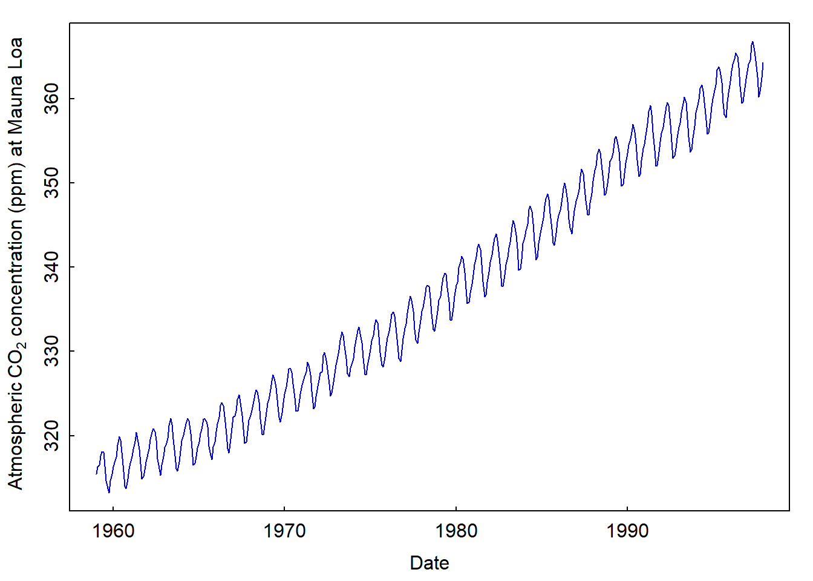
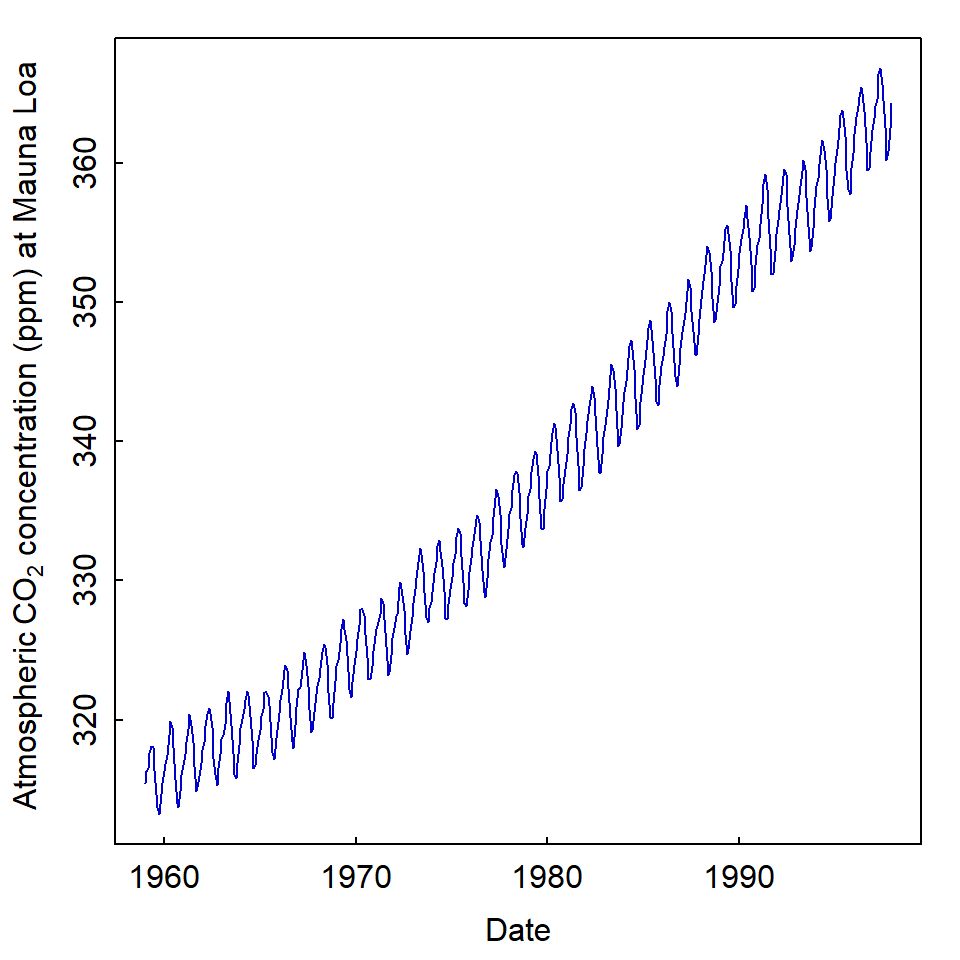

Material to support teaching in Environmental Science at The University of Western Australia
Material to support teaching in Environmental Science at The University of Western Australia
Units ENVT3361, ENVT4461, and ENVT5503
R markdown chunk options
More control over reports
Andrew Rate
2025-06-30
This brief guide follows on from a previous page on this site, the Brief Essentials of R Markdown
Hiding both code and output
If we want R code to run, but not show either the code nor any
output, we include the option include=FALSE
# the R markdown chunk option include = FALSE is used when it's not
# helpful to see the code and output, for example loading packages
library(car)
library(lmtest)
library(robustbase)
```
Chunk Names: You'll notice that after
{r we include a name like
hide-code-and-output. These names must be unique for each
chunk, preferably with words separated with hyphens -.
Usually we don't want warnings or messages from our R
code in reports either, so we would also include
warning=FALSE and include=FALSE:
⋮
```
Hiding the code
To hide just the code, but display the output (text-based output,
plots, etc.), we include the option echo=FALSE. In
reports, we normally don't want to display the code or any warnings or
messages, so we could include all these options in each chunk:
par(mar=c(3,3,1,1), mgp=c(1.7,0.3,0), tcl=0.2)
# co2 is a built-in R dataset
plot(co2, col="blue3", type="l", xlab="Date",
ylab=expression(paste("Atmospheric ",CO[2]," concentration at Mauna Loa")))
```

A more efficient way to do this, however, would be to modify the chunk at the beginning of our markdown when we create a new R markdown file in R:
knitr::opts_chunk$set(echo=FALSE, warning=FALSE, message=FALSE)
```
If we set these chunk options at the beginning, we can omit the
options echo=FALSE, warning=FALSE, message=FALSE in our
individual code chunks. We can override them if we want, e.g.
by including echo=TRUE.
Re-sizing plots
One of the most useful sets of chunk options allows to change how
plots appear, such as fig.width, fig.height,
fig.align, and so on. For example, we could use
fig.width and fig.height make the previous
plot squarer:
⋮
```

Setting fig.width and fig.height is for the
whole plot area so, if we have a multiple-frame plot (i.e.
using mfrow= or mfcol= in the
par() function), we would need to adjust the dimensions to
match. For example:
par(mfrow=c(1,2), mar=c(3,3,1,1), mgp=c(1.7,0.3,0), tcl=0.2, font.lab=2)
# co2 and sunspots are built-in R datasets
plot(co2, col="blue3", type="l", xlab="Date",
ylab=expression(bold(paste("Atmospheric ",CO[2]," concentration at Mauna Loa"))),
main=expression(paste("Atmospheric ",CO[2]," concentration at Mauna Loa")))
plot(sunspots, col="firebrick", type="l", xlab="Date",
ylab="Relative number of sunspots", main="Monthly Sunspot Numbers, 1749–1983")
```

Plots of two time series: atmospheric CO₂ concentrations (left), and sunspot numbers (right).
Adding figure captions to plots
We add captions using
fig.caption="<figure caption text>". This is a better
option for reporting than including a title above plots using the
main= option
⋮
```
Figure 1: Time series of atmospheric CO₂ concentrations from 1959 to 1998, measured at the Mauna Loa observatory in Hawaii.
We could just use normal markdown text to insert a caption, but using
fig.caption can allow automatic cross-referencing of
figures and tables to their captions using the bookdown R
package.
At this stage it's useful to note that with a long chunk header
(within {}), such as that shown above, we should not insert
any line breaks. The chunk will return an error and not work unless
there are no line breaks in the chunk header.
Using the bookdown package
The R package bookdown is very powerful, but so far I
only use it for its ability to provide automatic Figure and Table
numbering, and cross-referencing.
You would need to run the following R code if you don't have
bookdown installed:
You would also need to include the following in the yaml
header at the top of your R markdown document:
---
⋮
output:
bookdown::html_document2:
⋮
---This should give a menu option to
Knit to html_document2, which is what we should use later
to prepare our formatted document.
We can then use chunk names to cross reference figures and tables. For example, for the chunk above plotting two figures...
⋮
```
...we would cross-reference this by including
Figure \@ref(fig:co2-and sunspot-plots) at the appropriate
place in our text.
Notes
- chunk names can not contain spaces, periods, underscores, or
slashes; words should just be separated by hyphens (
-), and all chunk names must be unique - we don't need to include the word
Figureor a figure number at the start of thefig.cap=text string in the chunk header ({r . . . })
Similarly, table captions can be cross-referenced using
Table \@ref(tab:table-chunk-name) in the text outside of
any code chunks. We would need to set a table caption in the chunk
header using tab.cap=, or use a package like
flextable or knitr::kable() and include table
caption options from those packages.
Other chunk options
Option | Purpose |
|---|---|
out.width= | Sets the width of a figure as a proportion of the output page width, |
fig.align= | Aligns the figure on the output page |
results='hold' | Waits until all the code in a chunk has run before printing any text output |
paged.print= | If TRUE (the default) adds html format to printed data frames; |
You can see a more complete table in the R Markdown Cheatsheet.
Other R Markdown Resources
R Markdown Cheat Sheet (Posit Software, 2024)
Getting used to R, RStudio, and R Markdown – Chapter 4 in the excellent (and free) eBook by Chester Ismay
Chunk Options – Chapter 11 in R markdown cookbook by Xie et al. (2025)
References
Ismay, Chester (2016) Getting used to R, RStudio, and R Markdown. https://bookdown.org/chesterismay/rbasics/ (accessed 2025-06-17)
Posit Software (2024) rmarkdown::CHEATSHEET. https://rstudio.github.io/cheatsheets/rmarkdown.pdf
(accessed 2025-06-17)
Xie, Yihui (2020) Chunk Options and Package Options. https://yihui.org/knitr/options/ (accessed 2025-06-17)
Xie Y, Dervieux C, Riederer E (2025) R Markdown Cookbook. https://bookdown.org/yihui/rmarkdown-cookbook/ (accessed 2025-06-17)
CC-BY-SA • All content by Ratey-AtUWA. My employer does not necessarily know about or endorse the content of this website.
Created with rmarkdown in RStudio. Currently using the free yeti theme from Bootswatch.